Boss（Veltharis）C4 突刺：裁決突刺
還沒接進遊戲。起手：劍從肩上拿下來、立在右肩前、劍尖往前放下，雙手把劍收到右腰（劍尖朝前），右腳往後退開（左腳在前、右腳在後，兩腳距離比肩寬），蹲低、上身前傾、往右扭。突進：右腳一蹬，雙手把劍直直刺出去，上身壓低，左腳在空中往前跨、落地，右腳在後面拖著；遊戲在這 0.2 秒把 Boss 往前移 160px，每一張照遊戲的位置畫，劍尖一直在他前方約 150px、主角的高度。收招：壓在前腳上停一下，把劍收回來，左腳先退回身體下面，劍立在右肩前、放回肩上，右腳再收上來。四個方向：朝下、朝右、朝上、朝左（朝左不是鏡像）。刀光、殘影、塵土由程式畫，這裡沒有。
關鍵姿勢（四個方向，2 倍）
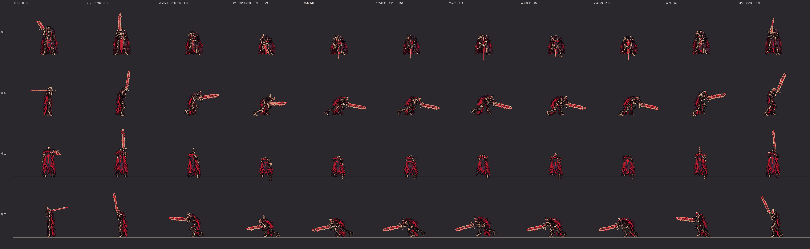
裁決突刺的關鍵姿勢
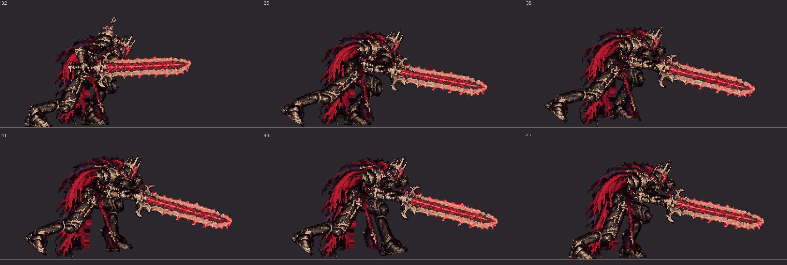
側面 3 倍：起手停住（32）、蹬地（35）、飛出去（38、41、44）、落地（47）
遊戲裡會看到的順序
裁決突刺（原地看：遊戲把 Boss 往前移的部分沒有畫）：扛劍站著 → 起手 0.6 秒（劍收到右腰、右腳往後退開、蹲低前傾）→ 突進 0.2 秒（判定）→ 收招 0.8 秒 → 扛劍站著
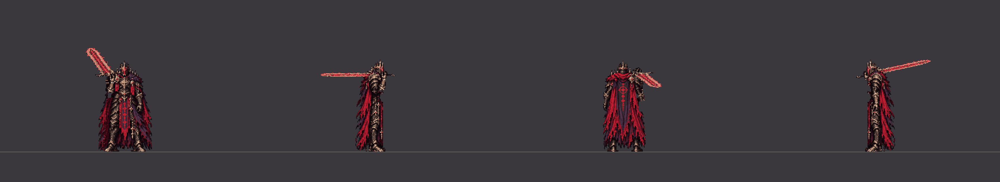
四個方向（2 倍）
朝下（60fps）朝右（60fps）朝上（60fps）朝左（60fps）裁決突刺（照遊戲的位置：突進的 0.2 秒往前移 160 px；1 倍）
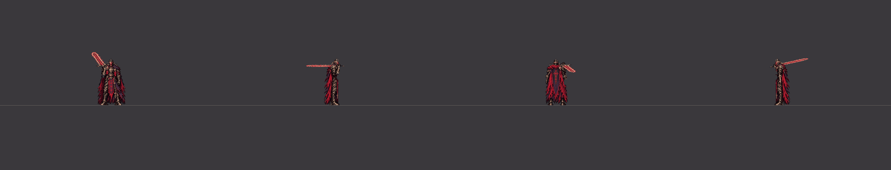
四個方向（1 倍）
朝下（60fps）朝右（60fps）朝上（60fps）朝左（60fps）二階段：收招縮短成 0.6 秒（同一組圖；照遊戲的位置，1 倍）
四個方向（1 倍）
朝下（60fps）朝右（60fps）朝上（60fps）朝左（60fps）往前走時出招（從走路循環第 10 張直接接突刺）（原地看）
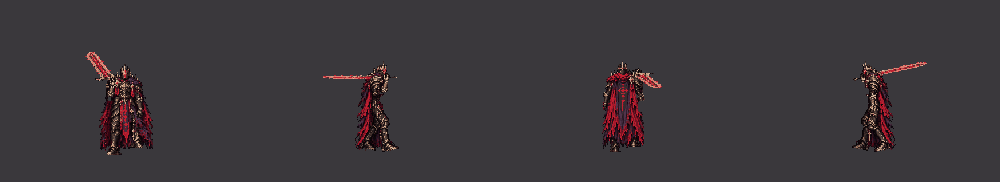
四個方向（2 倍）
朝下（60fps）朝右（60fps）朝上（60fps）朝左（60fps）側移時出招（從往左側移的循環第 5 張直接接突刺）（原地看）
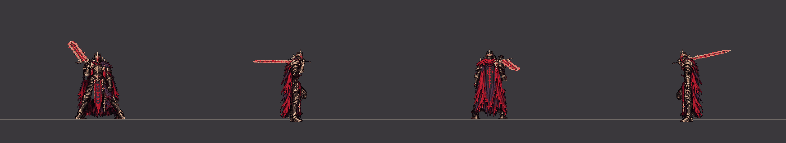
四個方向（2 倍）
朝下（60fps）朝右（60fps）朝上（60fps）朝左（60fps）突進的最後一刻被完美彈返：被彈開 1.2 秒 → 扛劍站著（原地看）
四個方向（2 倍）
朝下（60fps）朝右（60fps）朝上（60fps）朝左（60fps）
握劍的手（放大 4 倍）
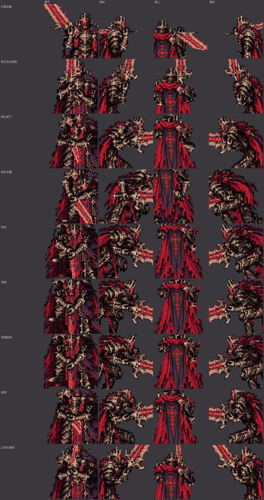
扛劍站著、劍立在右肩前、劍尖放下、收在右腰、刺出、突進、突進結束、收回、立在右肩前
側面的腿（只畫腿，綠線＝靠鏡頭的右腿，藍線＝左腿；每一張，照地面上的位置）
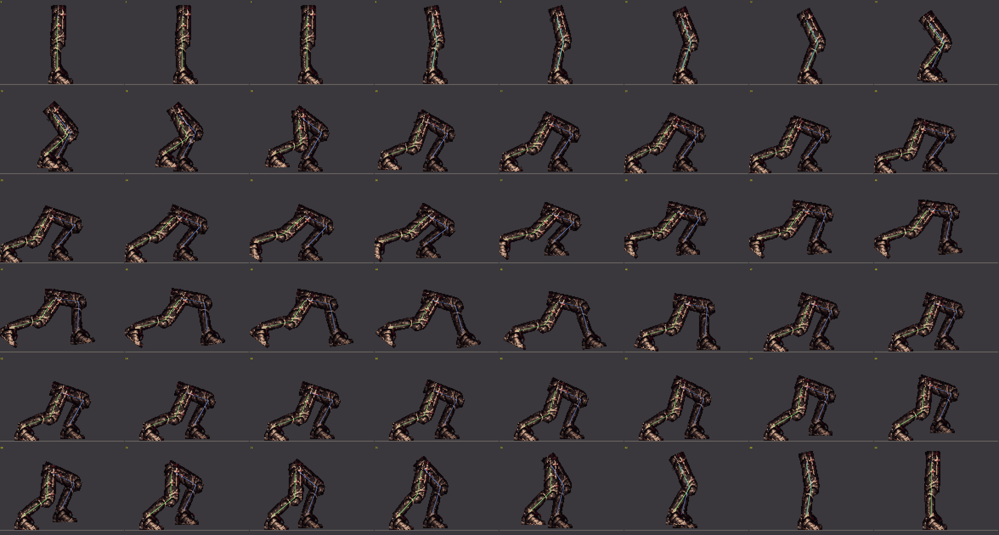
裁決突刺（C4 突刺，雙手）（每一張，左上角是第幾個戰鬥幀）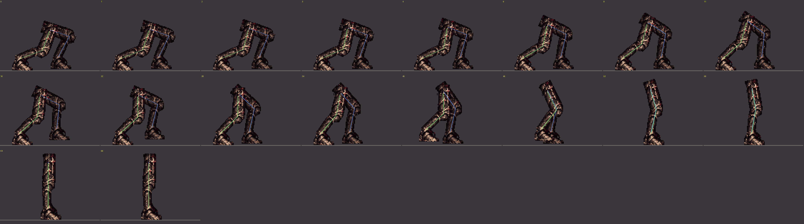
裁決突刺被彈開（每一張，左上角是第幾個戰鬥幀）
逐張
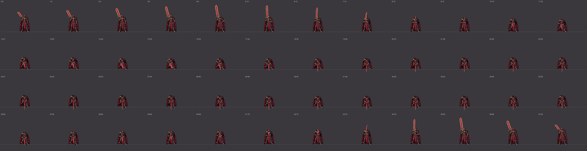
裁決突刺（C4 突刺，雙手） 朝下（第幾張：從出招開始的第幾個戰鬥幀）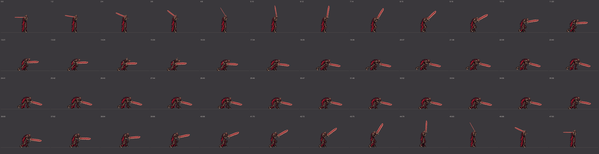
裁決突刺（C4 突刺，雙手） 朝右（第幾張：從出招開始的第幾個戰鬥幀）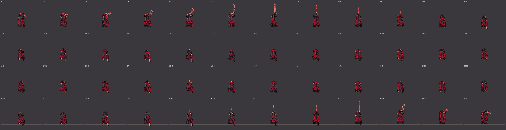
裁決突刺（C4 突刺，雙手） 朝上（第幾張：從出招開始的第幾個戰鬥幀）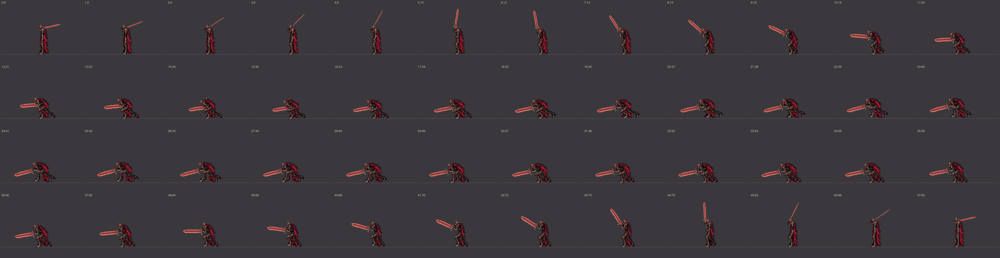
裁決突刺（C4 突刺，雙手） 朝左（第幾張：從出招開始的第幾個戰鬥幀）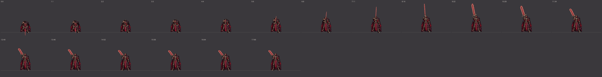
裁決突刺被彈開 朝下（第幾張：從出招開始的第幾個戰鬥幀）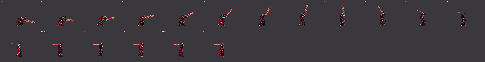
裁決突刺被彈開 朝右（第幾張：從出招開始的第幾個戰鬥幀）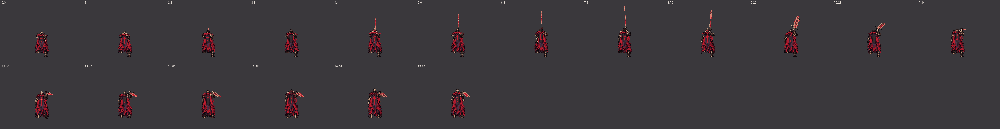
裁決突刺被彈開 朝上（第幾張：從出招開始的第幾個戰鬥幀）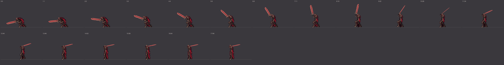
裁決突刺被彈開 朝左（第幾張：從出招開始的第幾個戰鬥幀）